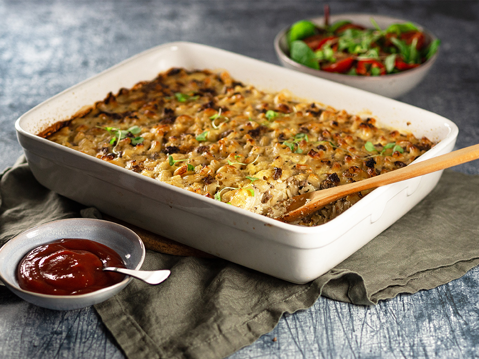

Macaroni Casserole

Descriotion
Macaroni casserole is the king of Finnish home cooking.
Here's a traditional,
easy and guaranteed recipe that
will give you a succulent result.
This recipe contains 6 servings.
Ingredients
- Macaron 400g
- Minced meat 400g
- 1 Onion
- 1 Beef stock cube
- Milk 7dl
- 3 Eggs
- Spices of your choice
Steps
Preliminaries
- Preheat the oven to 200°C
- Boil the macaroni in salted water, but leave it a little bit chewy
(do not cook it all the way through, it will continue to cook in the oven).
Drain the water
Frying
- Fry the minced meat and chopped onion in a pan
- Season the minced meat with a stock cube, black pepper and a pinch of salt
(remember that the stock already contains salt)
Egg milk production
- Break the eggs into a bowl and beat until they are broken up
- Add the milk and mix until smooth. You can add a pinch of salt here as well
Home